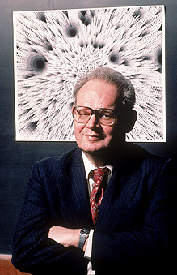
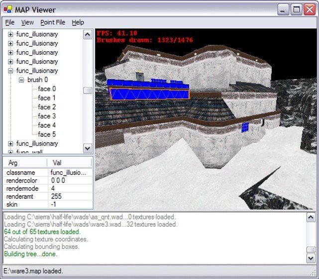

Фрактальна графіка — технологія створення зображень на основі фракталів. Фрактальна графіка базується на фрактальній геометрії.
Найвідомішими фрактальними об'єктами є дерева: від кожної гілки відходять менші, схожі на неї, від них — ще менші. За окремою гілкою математичними методами можна відслідкувати властивості всього дерева. Фрактальні властивості мають такі природні об'єкти, як: сніжинка, що при збільшенні виявляється фракталом; за фрактальними алгоритмами ростуть кристали та рослини.
Фрактальне зображення, котре складається з подібних між собою елементів. Побудова відбувається шляхом автоматичної генерації зображень за формулами.
Фрактал — це об'єкт, окремі елементи якого успадковують якості батьківських структур. Слово фрактал утворене від латинського лат. fractus і в перекладі означає складається з фрагментів. Воно було запропоноване Бенуа Мандельбротом в 1975 році для позначення нерегулярних, проте слабкоподібних структур, якими він займався.
Народження фрактальної геометрії прийнято пов'язувати з виходом в 1977 році книги Мандельброта «en:The Fractal Geometry of Nature». У його роботах використані наукові результати інших учених, що працювали в 1875–1925 роках в тій же області (Анрі Пуанкаре, Фату П'єр, Жюліа Гастон Моріс, Георг Кантор, Фелікс Гаусдорф). Але тільки у наш час вдалося об'єднати їх роботи в єдину систему. Самоподібність – одна з основних властивостей фракталів. Об'єкт називають самоподібним, коли збільшені частини об'єкту схожі на сам об'єкт і один до одного.
Поява нових елементів меншого розміру відбувається за простим алгоритмом. Очевидно, що описати подібні об'єкти можна всього лише декількома математичними рівняннями!
Трикутники можна добудовувати аналогічним чином до нескінченності. Ми можемо отримати об'єкт будь-якого рівня складності, використовуючи простий алгоритм. При цьому нічого, крім самих рівнянь, які займають декілька байт, у пам'яті комп'ютера зберігати не треба! Уся інформація, необхідна для відтворення цього фрактала, займає всього лише десятки байт! Звичайно, виникло питання — а чи можна стиснути будь-яку інформацію, підібравши необхідний фрактальний алгоритм? Принципово можна, і на заході активно ведуться роботи в цьому напрямку. Таким чином, фрактали є цікавим об'єктом для вивчення за двома основними причинами:
Серед програмних засобів можна виділити продукти фірми Golden SoftWare:
Surfer дозволяє обробити та візуалізувати двовимірні набори даних, що описані функцією z=f (x,y). Можна побудувати цифрову модель поверхні, застосувати допоміжні операції і візуалізувати результат.
Grapher призначений для обробки та виводу графіків, що описані функціями y=f(x). Не має обмежень по числу графіків на одному малюнку або числу кривих в одному графіку і дозволяє розмістити декілька осей з різними масштабами та одиницями вимірювання.
Map Viewer дозволяє вводити та корегувати карти — змінювати масштаб, перетворювати координати, обробляти й виводити у графічному вигляді числову інформацію, пов'язану з картами.
Пакет Iris Explorer (фірма Graphics) призначена для створення моделей погодних умов та океану.
Пакет Earth Watch (фірма Earth Watch) призначений для моделювання та демонстрації тривимірного зображення метеоумов над Землею, будувати топологічні поверхні по космічних знімках і прогнозувати погоду на тиждень вперед.
Модуль Chart у стандартному пакеті MS Office дозволяє легко й наочно створити графіки на основі даних, що знаходяться у таблиці. Користувач може перетворити графіки у будь-яку з 5 основних форм графіків:
Також, при зміні даних у таблиці, змінюється відповідне значення у графіку.